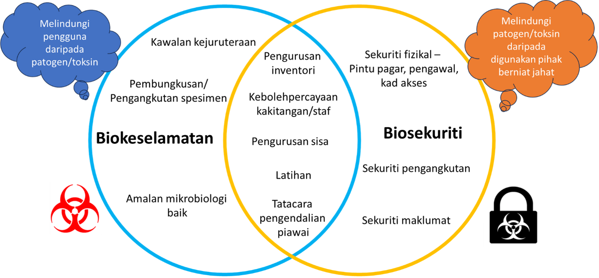

Kesedaran Berkaitan Biokeselamatan & Biosekuriti Dalam Kalangan Penyelidik Muda
Oleh: Shakir Yusop & Hazlam Shamin Ahmad Shaberi
Ringkasan: Artikel ini membincangkan kepentingan biokeselamatan dan biosekuriti dalam penyelidikan saintifik di Malaysia, dengan fokus kepada peranan Jabatan Biokeselamatan (JBK) dan langkah-langkah yang diambil untuk melindungi manusia, haiwan, dan alam sekitar daripada risiko patogen dan toksin biologi. Artikel ini juga menekankan perlunya meningkatkan kesedaran dalam kalangan penyelidik muda mengenai isu ini.